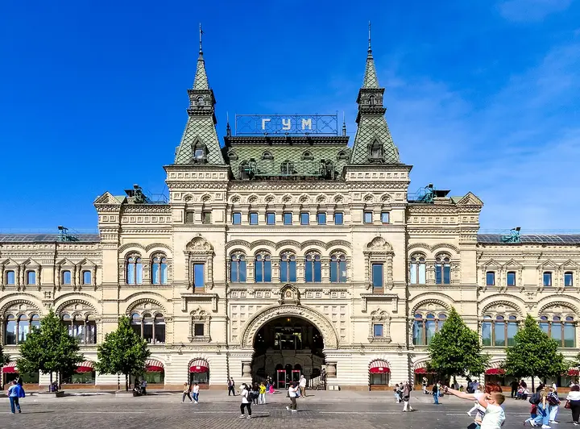

Фото: Никонико962, CC BY-SA 4.0 · Wikimedia Commons
Кинотеатр · ЦАО
Кинозал ГУМ
Маленький кинозал в ГУМе с лепниной, хрустальными люстрами и бархатными шторами. Премьеры, кино на языке оригинала и трансляции опер и спектаклей.
- ₽ · до 1 500 ₽ на человека
- Новое в каталоге
- в 1 плане
Позвать сюда: Кинозал ГУМОткрыть в каталоге: Кинозал ГУММаршрут до места: Кинозал ГУМ
Адрес и детали
- Адрес
- Красная пл., 3 (ГУМ, 3-я линия, 3-й этаж)
Открыть на Яндекс Картах (в новой вкладке) - Метро
- м. Площадь Революции
- Округ
- Центр (ЦАО)
- Цена
- до 1 500 ₽ на человека
- Телефон
- +7 (495) 788-43-43
- Проверено
- работает — проверили в октябре 2026
Планы с этим местом 1
- Кинозал ГУМ · Кинотеатр · м. Площадь Революции
- 7 минут пешкомВокруг Света · Гастромаркет
Фильм в маленьком зале ГУМа с лепниной и бархатными шторами, а потом гастромаркет «Вокруг Света» на Никольской: десятки кухонь, а в пятницу и субботу — до 5 утра.
Открыть план: Кино в ГУМе и ночной гастромаркетПозвать сюда: Кино в ГУМе и ночной гастромаркет
Фото: Никонико962, CC BY-SA 4.0 · Wikimedia Commons

Похожие рядом


Что ещё рядом


Как позвать
- Выбери план, место или событие — в карточке адрес, цены и маршрут в Яндекс Картах.
- Нажми «Позвать сюда» — соберётся приглашение-игра для свидания или голосование для компании.
- Отправь ссылку в любой мессенджер: тебе ответят, а компания отметит, куда и когда может. Бесплатно и без регистрации.